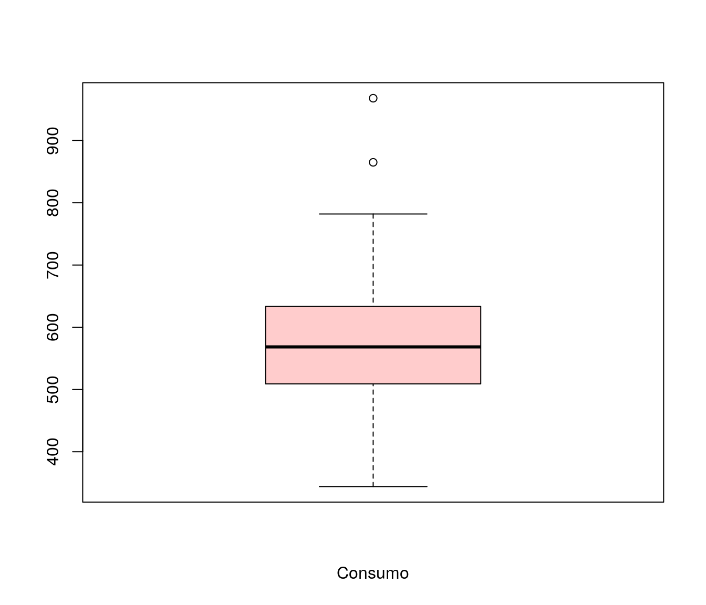

|
\[\textbf{Lineu Alberto Cavazani de Freitas}\] \[\textbf{Prof. Cesar Augusto Taconeli}\] \[\textbf{Modelos Lineares Generalizados (CE225)}\]
Regressão Linear com Erros Normais
Consumo de Combustível
1 Dados
Exemplo disponível em: Paula, G. A. (2004). Modelos de regressão: com apoio computacional . São Paulo, SP: IME-USP. (Eg 1.12.5, pág. 94)
Dados referentes ao consumo de combustível em 48 estados norte-americanos.
Variáveis:
- taxa: taxa do combustível no estado em USD,
- licença: proporção de motoristas licenciados,
- renda: renda percapita em USD,
- estradas: ajuda federal para as estradas em mil USD,
- consumo: consumo de combustível por habitante.
O objetivo neste estudo é explicar o consumo de combustível pelas variáveis taxa, licença, renda e estradas.
Os dados estão disponíveis no pacote labestData
## ----------------------------------------------------------------------
## labestData: Biblioteca de Dados para Aprendizado de Estatística
##
## Para colaboração, suporte ou relato de bugs, visite:
## http://gitlab.c3sl.ufpr.br/pet-estatistica/labestData,
## https://github.com/pet-estatistica/labestData
##
## labestData version 0.1-1.462 (feito em 2016-08-29) foi carregado.
## ----------------------------------------------------------------------O pacote fornece, além dos dados, sua documentação e um exemplo de análise. Verifique!
Armazenando a base no objeto dados:
Primeiras 6 linhas da base:
## taxa licen renda estr cons
## 1 9 0.525 3571 1976 541
## 2 9 0.580 3865 1586 561
## 3 8 0.544 4399 431 410
## 4 8 0.451 5319 11868 344
## 5 8 0.529 4447 8577 464
## 6 8 0.530 4391 5939 5802 Análise Descritiva
Vamos realizar uma breve análise descritiva dos dados.
2.1 Medidas Resumo
Usando a função summary verificamos o mínimo, o máximo, a mediana e os quartis para cada variável em estudo.
## taxa licen renda estr
## Min. : 5.000 Min. :0.4510 Min. :3063 Min. : 431
## 1st Qu.: 7.000 1st Qu.:0.5298 1st Qu.:3739 1st Qu.: 3110
## Median : 7.500 Median :0.5645 Median :4298 Median : 4736
## Mean : 7.668 Mean :0.5703 Mean :4242 Mean : 5565
## 3rd Qu.: 8.125 3rd Qu.:0.5952 3rd Qu.:4579 3rd Qu.: 7156
## Max. :10.000 Max. :0.7240 Max. :5342 Max. :17782
## cons
## Min. :344.0
## 1st Qu.:509.5
## Median :568.5
## Mean :576.8
## 3rd Qu.:632.8
## Max. :968.0As medidas descritivas mostram aparente simetria no que diz respeito às variáveis disponíveis. Nota-se também a grande variação da variável resposta consumo, com valores entre 344 e 968.
2.2 Boxplot
O boxplot é uma alternativa de análise descritiva para avaliação da distribuição dos dados.

A verificação do boxplot mostra aparente simetria da variável consumo e a presença de alguns valores atípicos.
2.3 Gráficos de Dispersão
Os gráficos de dispersão de cada variável explicativa contra a variável resposta permite verificar, preliminarmente, tendências e valores atípicos.
par(mfrow = c(2,2))
plot(cons~taxa, data = dados, xlab = 'Taxa', ylab = 'Consumo')
abline(lm(cons~taxa, data = dados), col=2, lwd = 2)
plot(cons~licen, data = dados, xlab = 'Licença', ylab = 'Consumo')
abline(lm(cons~licen, data = dados), col = 2, lwd = 2)
plot(cons~renda, data = dados, xlab = 'Renda', ylab = 'Consumo')
abline(lm(cons~renda, data = dados), col = 2, lwd = 2)
plot(cons~estr, data = dados, xlab = 'Estrada', ylab = 'Consumo')
abline(lm(cons~estr, data = dados), col = 2, lwd = 2)Visualmente, observando a tendência da variável resposta versus cada variável explicativa, vê-se que a que mais aparenta ter relação com o consumo de combustível por habitante é a proporção de motoristas licenciados.
Adicionalmente é recomendável fazer um estudo da matriz de correlaçães dos dados. Para isso, foi utilizado o coeficiente de correlação linear de Pearson.
## licen renda estr cons
## licen 1.0000000 0.15707008 -0.06412950 0.69896542
## renda 0.1570701 1.00000000 0.05016279 -0.24486207
## estr -0.0641295 0.05016279 1.00000000 0.01904194
## cons 0.6989654 -0.24486207 0.01904194 1.00000000Na matriz de correlação evidencia-se a relação entre consumo e proporção de motoristas licenciados. A correlação entre essas duas variáveis é aproximadamente 0,7. Nota-se também a baixa correlação entre consumo e ajuda federal para as estradas.
2.4 Histogramas
O histograma é outra alternativa para observar a forma da distribuição dos dados:
- Consumo de combustível por Habitante (resposta)
hist(dados$cons, probability = TRUE, xlab = 'Consumo', ylab = 'Densidade',
main = '', col = "#FFCCCC", ylim = c(0, 0.0045))
lines(density(dados$cons), col = "#990000", lwd = 4)- Variáveis Explicativas
par(mfrow=c(2,2))
hist(dados$taxa, probability = TRUE, xlab = 'Taxa', ylab = 'Densidade',
main = '', col = "#99FF99", ylim = c(0, 0.5))
lines(density(dados$taxa), col = "#006600", lwd = 4)
hist(dados$licen, probability = TRUE, xlab = 'licença', ylab = 'Densidade',
main = '', col = "#CCFFFF", ylim = c(0, 8))
lines(density(dados$licen), col = "#000099", lwd = 4)
hist(dados$renda, probability = TRUE, xlab = 'Renda', ylab = 'Densidade',
main = '', col = "#FFCCFF")
lines(density(dados$renda), col = "#663366", lwd = 4)
hist(dados$estr, probability = TRUE, xlab = 'Estrada', ylab = 'Densidade',
main = '', col = "#E6E8FA", xlim = c(0, +15000))
lines(density(dados$estr), col = "#545454", lwd = 4)Marginalmente a variável resposta apresenta distribuição aproximadamente simétrica. Quanto às variáveis explicativas, verifica-se certos desvios de simetria, em especial nas variáveis taxa e estrada.
3 Ajuste dos Modelos de regressão
3.1 Ajuste 1
Inicialmente, vamos ajustar o modelo de regressão linear múltipla com todas as variáveis de forma aditiva e todas as observaçães.
A expressão do modelo proposto é dada por:
\[ \newcommand{\undertilde}[1]{\underset{\widetilde{}}{#1}}\]
\[y_{i}|\undertilde{x_{i}} \sim Normal(\mu_{i}, \sigma^{2})\] \[ \newcommand{\undertilde}[1]{\underset{\widetilde{}}{#1}}\] \[ \mu_{i} = E(y_{i}|\undertilde{x_{i}}) = {\beta_{0}} + {\beta_{1}}\, taxa_i + {\beta_{2}}\, licen_i + {\beta_{3}}\, renda_i + {\beta_{4}}\, estr_i\]
3.1.1 Análise de Resíduos
Parte importante da etapa de ajuste de modelos de regressão linear com erros Normais é a análise de resíduos. Nesta fase deve-se verificar os pressupostos do modelo com base na análise dos resíduos: homocedasticidade, Normalidade, independência e identificação de observações discrepantes.
O gráfico do canto esquerdo superior trás os resíduos ordinários versus os valores ajustados. Esse gráfico é importante para verificação de possíveis padrões não aleatórios, heterocedasticidade, presença de outliers e pontos influentes; o padrão que indica bom ajuste é o de pontos dispersos aleatóriamente e a linha de tendência aproximadamente constante em torno de zero.
O gráfico do canto direito superior mostra os quantis teóricos da distribuição Normal padrão contra os resíduos padronizados. Esse gráfico permite avaliar a pressuposição de normalidade e, caso não haja normalidade, permite avaliar a forma da distribuição, além de indicar possíveis outliers. Pontos dispersos aleatoriamente, nas proximidades da linha identidade (pontilhada), indicam normalidade.
O gráfico do canto inferior esquerdo apresenta a raiz quadrada dos resíduos padronizados versus os valores ajustados. Esse gráfico é uma alternativa ao primeiro, baseado nos resíduos padronizados. Tendências nesse gráfico são indicativos de variância não constante.
E por fim, o gráfico do canto inferior direito apresenta os valores da distância de Cook para cada observação. A distância de Cook é uma medida de diferença das estimativas dos parâmetros do modelo ao considerar e ao desconsiderar uma particular observação no ajuste. Observaçães com valores elevados para essa medida devem ser verificadas.
Os gráficos de resíduos indicam aparente heterocedasticidade, além de observaçães atípicas.
3.1.2 Verificação de Normalidade
Além do qq-plot é válido explorar outras formas de visualização para verificar aderência dos resíduos à distribuição Normal.
Outra alternativa é fazer uso do teste de Shapiro-Wilk. Trata-se um teste utilizado para verificar se a distribuição de probabilidade associada a um conjunto de dados pode ser aproximada pela distribuição Normal. As hipóteses do teste são:
\[ \begin{matrix} H_{0} : \textrm{ Os resíduos têm distribuição normal} \\ H_{1} : \textrm{Os resíduos não têm distribuição normal} \end{matrix} \]
par(mfrow=c(1,2))
hist(ajuste1$residuals, probability = TRUE, main = 'Resíduos do Ajuste',
xlab = 'Resíduos', ylab = 'Frequência', col = "#FFFFCC") # histograma dos residuos
lines(density(ajuste1$residuals), col = "#666600", lwd = 4)
library(hnp)
hnp(ajuste1, main = 'Gráfico Normal com Envelope', xlab = 'Quantis Teóricos', ylab = 'Resíduos') ## Gaussian model (lm object)##
## Shapiro-Wilk normality test
##
## data: ajuste1$residuals
## W = 0.93918, p-value = 0.0151A análise gráfica apresenta alguns desvios de normalidade. Quanto ao teste de Shapiro-Wilk, ao nível de significância de 5% há evidência suficiente para a rejeição da hipótese nula.
3.1.3 Medidas de Infuência
A função influence.measures retorna diferentes medidas de influência e indica potenciais observaçães influentes no modelo ajustado. São calculados, para cada observação, os valores para DFBETAS, DFFITS, COVRATIO, destância de cook, e os elementos da diagonal da matriz de projeção ortogonal (matriz H).
DFBETAS: Medida de influência nas estimativas dos parâmetros do modelo (avaliados um a um);
DFFITS: Medida de diferença nos valores ajustados;
COVRATIO: Medida de alteração na precisão das estimativas dos parâmetros do modelo;
COOK: Medida de diferença no conjunto de estimativas dos parâmetros do modelo;
HAT: Corresponde é diagonal da matriz de projeção da solução de mínimos quadrados. Tais medidas expressam quão extremas são as observaçães no espaço das covariáveis.
## Potentially influential observations of
## lm(formula = cons ~ taxa + licen + renda + estr, data = dados) :
##
## dfb.1_ dfb.taxa dfb.licn dfb.rend dfb.estr dffit cov.r cook.d
## 4 -0.01 0.04 -0.15 0.16 0.12 0.28 1.53_* 0.02
## 19 -0.02 0.03 0.01 0.01 -0.05 -0.09 1.64_* 0.00
## 27 -0.13 0.14 0.03 0.12 0.01 0.22 1.43_* 0.01
## 30 -0.08 0.08 -0.04 0.12 0.20 0.27 1.42_* 0.01
## 44 -0.35 -0.32 1.02_* -0.02 -0.38 1.49_* 0.18_* 0.31
## hat
## 4 0.28
## 19 0.32_*
## 27 0.23
## 30 0.23
## 44 0.10Com base nos resultados da análise de influência, deve-se:
- Estudar os perfis dos indivíduos 4, 19, 27, 30 e 44.
- Buscar compreender o motivo dos valores discrepantes para as correspondentes medidas;
- Avaliar o efeito dessas observaçães no ajuste (ajustando um novo modelo sem esses dados e comparando os resultados).
3.2 Ajuste 2
Vamos ajustar o modelo de regressão linear múltipla com todas as variáveis e sem as observaçães 19 e 44, sinalizadas com valores elevados para duas ou mais medidas de influência.
Vamos usar a função compareCoefs, do pacote car, para confrontar os resultados dos dois ajustes:
## Calls:
## 1: lm(formula = cons ~ taxa + licen + renda + estr, data = dados)
## 2: lm(formula = cons ~ taxa + licen + renda + estr, data = dados[-c(19,
## 44), ])
##
## Model 1 Model 2
## (Intercept) 377 434
## SE 186 158
##
## taxa -34.8 -31.7
## SE 13.0 11.2
##
## licen 1336 1173
## SE 192 166
##
## renda -0.0666 -0.0664
## SE 0.0172 0.0145
##
## estr -0.00243 -0.00119
## SE 0.00339 0.00308
## Embora algumas estimativas e erros padrões tenham seus valores reduzidos após exclusão das duas observaçães, não há alteraçães substanciais quanto às conclusões dos dois modelos (as relaçães estimativa/erro padrão aproximadamente se mantém, os sinais das estimativas são os mesmos).
Vamos avaliar o impacto dessas duas observaçães na distribuição dos resíduos:
##
## Shapiro-Wilk normality test
##
## data: ajuste2$residuals
## W = 0.97418, p-value = 0.3923## Gaussian model (lm object)O teste de Shapiro-Wilks e o qq-plot com envelopes simulados indicam agora aderência à distribuição Normal. Para a sequência da análise, no entanto, serão consideradas todas as observaçães, visto que não há alteraçães inferenciais importantes decorrentes da manutenção desses dois pontos.
Para complementar a análise de resíduos, vamos usar os gráficos de componente + resíduos (função crPlots do pacote car). Nesse tipo de gráfico tem-se os resíduos versus cada covariável. No entanto, os resíduos são resultantes do ajuste de todas as demais covariáveis (exceto aquela que aparece no eixo horizontal). Permitem avaliar a necessidade e forma de inclusão de cada covariável ao modelo que contém as demais covariáveis.
Pode-se verificar relação decrescente quanto às variáveis taxa e renda e crescente quanto a licen. Com relação é variável estr, aparentemente não há relação entre a resposta e essa variável uma vez ajustado o efeito das demais covariáveis.
3.2.1 Resumo do Modelo Ajustado
##
## Call:
## lm(formula = cons ~ taxa + licen + renda + estr, data = dados)
##
## Residuals:
## Min 1Q Median 3Q Max
## -122.03 -45.57 -10.66 31.53 234.95
##
## Coefficients:
## Estimate Std. Error t value Pr(>|t|)
## (Intercept) 3.773e+02 1.855e+02 2.033 0.048207 *
## taxa -3.479e+01 1.297e+01 -2.682 0.010332 *
## licen 1.336e+03 1.923e+02 6.950 1.52e-08 ***
## renda -6.659e-02 1.722e-02 -3.867 0.000368 ***
## estr -2.426e-03 3.389e-03 -0.716 0.477999
## ---
## Signif. codes: 0 '***' 0.001 '**' 0.01 '*' 0.05 '.' 0.1 ' ' 1
##
## Residual standard error: 66.31 on 43 degrees of freedom
## Multiple R-squared: 0.6787, Adjusted R-squared: 0.6488
## F-statistic: 22.71 on 4 and 43 DF, p-value: 3.907e-10O resumo indica que as variáveis taxa, licen e renda estão associadas ao consumo, enquanto a variável estr não apresenta relação. Vamos ajustar o modelo linear com erros normais agora sem a variável estr.
3.3 Ajuste 3
Aqui ajustamos o modelo de regressão linear sem a variável ajuda federal para as estradas.
3.3.2 Verificação de Normalidade
par(mfrow = c(1,2))
hist(ajuste3$residuals, probability = TRUE, main = 'Resíduos do Ajuste',
xlab = 'Resíduos', ylab = 'Frequência', col = "#FFFFCC",
ylim = c(0,0.007))
lines(density(ajuste3$residuals), col = "#666600", lwd = 4)
library(hnp)
hnp(ajuste3, main = 'Gráfico Normal com Envelope', xlab = 'Quantis Teóricos', ylab = 'Resíduos') ## Gaussian model (lm object)
##
## Shapiro-Wilk normality test
##
## data: ajuste3$residuals
## W = 0.9282, p-value = 0.005858O resultado do diagnóstico deste ajuste é bastante similar ao verificado para o primeiro modelo. Dessa forma, vamos omitir a etapa de verificação de outliers e observações influentes e seguir para a análise do modelo ajustado.
4 Análise do Modelo Ajustado
As interpretações são baseadas no ajuste do modelo 3, em que foram considerados os dados dos 48 estados e eliminada a variável referente à ajuda federal.
4.1 Resumo do Modelo
##
## Call:
## lm(formula = cons ~ taxa + licen + renda, data = dados)
##
## Residuals:
## Min 1Q Median 3Q Max
## -110.10 -51.22 -12.89 24.49 238.77
##
## Coefficients:
## Estimate Std. Error t value Pr(>|t|)
## (Intercept) 307.32790 156.83067 1.960 0.05639 .
## taxa -29.48381 10.58358 -2.786 0.00785 **
## licen 1374.76841 183.66954 7.485 2.24e-09 ***
## renda -0.06802 0.01701 -3.999 0.00024 ***
## ---
## Signif. codes: 0 '***' 0.001 '**' 0.01 '*' 0.05 '.' 0.1 ' ' 1
##
## Residual standard error: 65.94 on 44 degrees of freedom
## Multiple R-squared: 0.6749, Adjusted R-squared: 0.6527
## F-statistic: 30.44 on 3 and 44 DF, p-value: 8.235e-11No summary do modelo podemos verificar o coeficiente de variação igual a 0.675, o que indica que 67,5% da variação referente é variável resposta é explicada pelas variáveis regressoras usadas no modelo. Adicionalmente, o teste F correspondente é hipótese nula de não significância do modelo (\(H_0: \beta_1 = \beta_2 = \beta_3 = 0\)) produziu p=8.235e-11, indicando a significância do modelo. Cada uma das Variáveis apresentou efeito significativo, ao nível de 5% de significância, ajustado o efeito ads demais covariáveis.
4.2 Estimativas
Os valores estimados para os parâmetros do modelo são:
## (Intercept) taxa licen renda
## 307.32789650 -29.48380857 1374.76841106 -0.06802286E os interavalos com 95% de confiança para os parâmetros do modelo:
## 2.5 % 97.5 %
## (Intercept) -8.7435503 623.39934333
## taxa -50.8136042 -8.15401295
## licen 1004.6067761 1744.93004604
## renda -0.1023038 -0.033741964.3 Modelo Ajustado
A expressão do modelo ajustado fica dada por:
\[E[\widehat{y|x}] = 307,32 - 29,48 \,\, taxa_i + 1374,77 \,\, licen_i - 0.07 \,\, renda_i\]
4.4 Interpretação das Estimativas
Para cada unidade de aumento na variável taxa, estima-se, em média, um decréscimo de aproximadamente 29,49 unidades na variável consumo, mantendo-se fixas as demais variáveis do modelo - IC:(-50,81 ; -8,15);
Para cada unidade de aumento na variável licen, estima-se, em média, um acréscimo de 1374 unidades na variável consumo, mantendo-se fixas as demais Variáveis do modelo - IC:(1004 ; 1745);
Para cada unidade de aumento na variável renda, estima-se, em média, um decréscimo de 0,07 unidade na variável consumo - IC:(-0,10 ; -0,03).
4.5 Gráfico de Efeitos
A função effects, do pacote de mesmo nome, devolve os efeitos marginais de cada variável um modelo ajustado; os gráficos de efeitos nos fornecem uma forma visual de observar como cada variável explicativa afeta a resposta, com as demais variáveis fixadas na média.
4.6 Usando o Modelo Ajustado para Prediçães
Para fins de ilustração, vamos considerar os seguintes perfis para dois estados distintos:
Perfil 1:
- Taxa do combustível no estado = 7.668333
- Proporção de motoristas licenciados = 0.5703333
- Renda percapita no estado = 4241.833
Perfil 2
- Taxa do combustível no estado = 8.483667
- Proporção de motoristas licenciados = 0.6258036
- Renda percapita no estado = 4815.457
E responder a seguinte pergunta: Qual é o consumo médio (ou esperado) de combustível por habitante em estados que tem o Perfil 1 e o Perfil 2?
perfis <- data.frame(taxa = c(7.668333, 8.483667),
licen = c(0.5703333, 0.6258036),
renda = c(4241.833, 4815.457))Obtemos assim:
- As estimativas pontuais:
## 1 2
## 576.7708 589.9709- Intervalos de confiança (95%) para o consumo médio médio.
## fit lwr upr
## 1 576.7708 557.5900 595.9517
## 2 589.9709 551.0998 628.8421- Intervalos de confiança (95%) para a predição.
## fit lwr upr
## 1 576.7708 442.5050 711.0367
## 2 589.9709 451.5138 728.4281E, finalmente, respondendo a pergunta:
O consumo médio estimado de combustível por habitante de um estado qualquer com o Perfil 1 é igual a 576.77; enquanto para um estado com o Perfil 2 a estimativa é de 589.97.
|
|

|
|
|

|